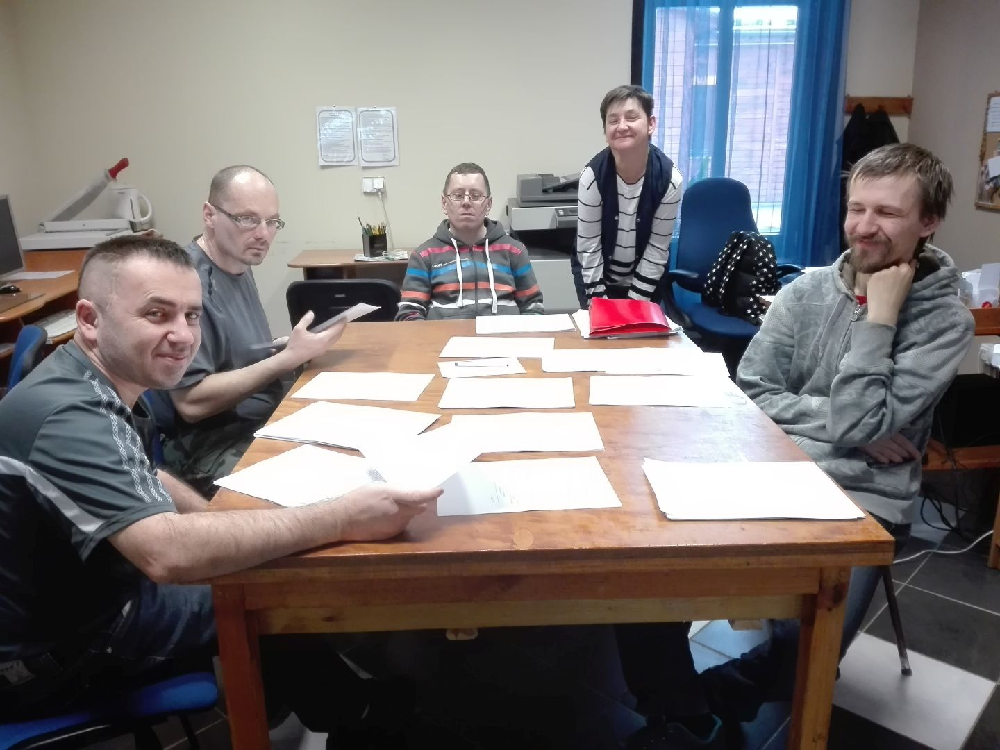

Pracownia komputerowo-poligraficzna
- terapeuta zajęciowy Stanisława Celina
Pracownia ta umożliwia rozwijanie umiejętności posługiwania się sprzętem komputerowym, urządzeniami peryferyjnymi, takimi jak: drukarka, skaner, aparat cyfrowy. Oprócz tego można nauczyć się obsługi laminarki i bindownicy. Wykonuje się tu druki na potrzeby bieżące WTZ, kartki okolicznościowe, wizytówki i inne. W pracowni prowadzone są zajęcia indywidualne i grupowe rozwijające funkcje poznawcze. 